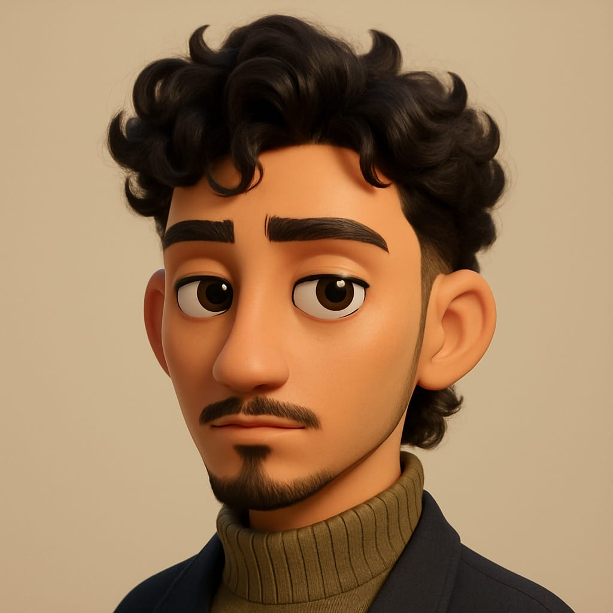

#Fool 1
Aaviskar
21 | Male | (Mama)The ultimate introvert with mysterious NPC energy. Mama is the type to sit silently while the world burns around him probably because his dad is out there leading a political revolt and he's just at home trying to figure out how to open VS Code. He is in computer engineering but somehow knows less about tech than your grandma. Wants to be a polymath but gives off strong “I will start tomorrow” energy every single day. Seems a bit ego-driven at first, but once you get to know him, turns out he is actually one of the kindest, funniest people in the room… if he ever speaks. He is wealthy and powerful but does not act like it. Just exists. Does not go out much, does not show off—he is basically on his own peaceful side quest. Cracks jokes that make zero sense but still make people laugh because his humor is so broken it loops back around to genius. Basically: Aaviskar is a walking contradiction. Quiet, chaotic, soft-hearted, semi-delusional, and somehow surviving the simulation with pure vibes. Aaviskar is what happens when God randomizes traits but forgets to press “shuffle.”
#Fool 2
Saphal
20 | Male | (Dada)If silence was a skill issue, Saphal would be undefeated. This man is so introverted he makes Aaviskar look like a social butterfly. But do not get it twisted—he's the tech god of the class. The type to casually explain quantum computing while forgetting how to say "yo" to his own friends. He's secretly building games in the shadows like he is under NDA with NASA. No one knows what he is making, but we are all 95% sure it is fire. Does not talk about it. Does not brag. Just silently upgrades himself like some background app you forgot was running. Yeah, he seems a little ego-heavy, but plot twist—he is just painfully shy. The kind of shy where he would rather debug a kernel panic than ask someone for a pen. Deep down though? Certified soft boi. Polite, loyal, awkward as hell—in the most loveable way. Oh, and he casually lives in a four-story house, which is somehow both iconic and suspicious. Like bro, blink twice if you're secretly a villain origin story. Basically:Saphal is what happens when God maxes out intelligence, forgets to add social skills, and just hits “deploy to production". Saphal is the G.O.A.T
#Fool 3
Kirtan
19 | Male | (Dada)Kirtan is the youngest in the squad but somehow talks like he has seen 7 lifetimes and 3 world wars. Dude drops wisdom in casual convos like he has got a TED Talk scheduled every morning. Half Socrates, half confused fresher just trying to figure life out. Knows all the tech *news* but ask him to write “Hello World” and he will suddenly get spiritual. He is fluent in English, fluent in movie quotes, and fluent in saying “bro, listen…” before dropping a random deep take no one asked for. This man is a full-blown cinema addict—if it is on IMDb, he has seen it. Twice. Probably rated it. Probably cried over it. His friends roast him for allegedly owning a school *Namuna*, which feels accurate because he talks like a motivational principal on a sugar high. Talks more than the rest in the group, but outside? Fully locked NPC mode. He wants everyone to grow, learn, evolve as if we are all Pokémon and he is Professor Oak with trauma. Basically: Kirtan is the lost movie sage who is somehow both a walking Wikipedia and the group has unofficial life guru. The loudest silent philosopher you will meet half movie critic, half lost guru, all energy.
#Fool 4
Krishal
21 | Male | (Dada)The ultimate lover boy, totally whipped over a girl in class and flexing that “couple goals” vibe like it is his full-time hustle. His dad owns a hardware shop,so you would think Krishal would at least know what “hardware” means. Nope. Bro is out here thinking computer hardware is some kind of home renovation project. Biggest scam alert on admission day: thought he was signing up for IT but somehow got drafted into Computer Engineering, where actual coding lives. Plot twist: he does not even know what C is,he probably thinks it is some secret cheat code. Bro has got mad zesty energy that leaves the boys wondering if he is memeing or for real. He is owning his comeback season. But here is the twist: he has got another girlfriend named PUBG, and honestly, she might be the real one stealing his attention. His girl is lowkey jealous of how much time he spends with the game. His house? More aesthetic than a Pinterest board on steroids. Every time we step in, we question our entire existence. Basically: Krishal is what happens when God designs a romantic lead, maxes out aesthetic, and throws in confusion as a personality trait.
#Fool 5
Sumit
21 | Male | (Dada)Sumit is the quietest soul in the squad—like, scary silent. If peace was a person, it would be him. Pure-hearted to the point you would feel guilty swearing around him. Bro is so lost in his own world, we are not even sure if he is thinking or just buffering. Lowkey Krishal's partner-in-crime for acting zesty, and together they confuse the entire friend group on the daily. Got his heart scammed by a girl who liked his wallet more than his vibe—plot twist: romance.exe crashed. He games like a warrior on *Mobile Legends* but codes like a guy trying to read hieroglyphics. Tries to be consistent with coding, but motivation runs away faster than his girl did. Oh, and yeah—owns a whole school. Like, full ownership. His dad is the CEO but Sumit is basically the chillest school heir ever. Sweet to the core, would not hurt a fly, and probably says “sorry” to bugs before squashing them. Basically: Sumit is what happens when God builds a cinnamon roll, adds a gaming addiction, gives him a school, and then forgets to install the “talks to people” update.
#Fool 6
Atal
21 | Male | (Hawa)Atal is the kind of guy who might forget his own name mid-convo but still argue confidently about quantum physics and toaster settings. Bro talks pure nonsense 90% of the time but delivers it with such confidence, you almost believe him—until he says something like “RAM has feelings too.” Switched lanes from C.A. to Computer Engineering and has been struggling ever since. Coding? Nah. Bro is still figuring out how to open VS Code without a tutorial. He swears like a sailor on mute like whispering curses no one is supposed to hear but still doing it every five minutes. Now let us talk legacy: 15 backs in 3 semesters. That is not failure, that is world-building. Man is building a back empire. Still, despite the chaos, the man has got heart. In a crisis? He will be the first to show up, probably yelling something useless, but he is there and that counts. In short: Atal is the chaotic good friend who might be academically on fire burning himself down, but when life hits the fan, you will remember exactly why you keep him around. Hardworking was the trait God printed in Bold letters during the making.